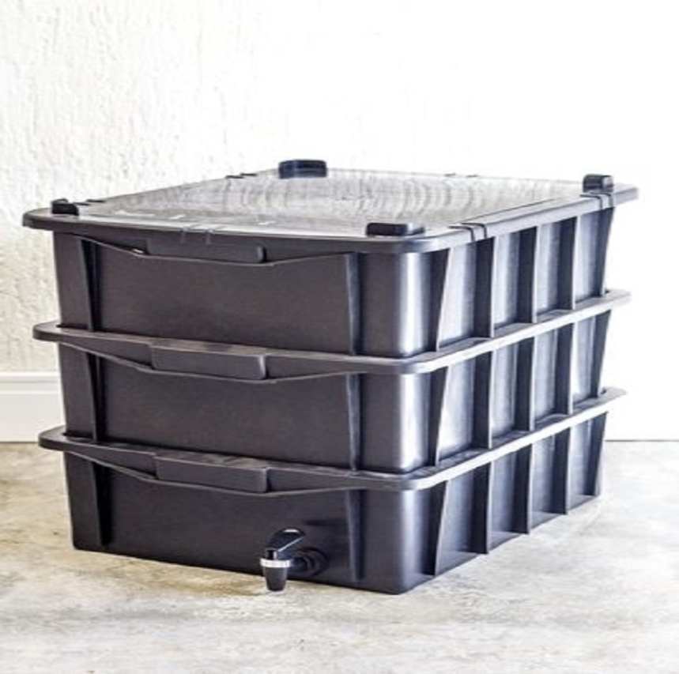

-
Composteira
Aqui você vai ver o que e uma composteira.
-
Contato
Clique aqui para entrar em contato conosco.
-
Sobre Iasmim
Sobre a Engenheira Iasmim Marinho.
Aqui você vai ver o que e uma composteira.
Clique aqui para entrar em contato conosco.
Sobre a Engenheira Iasmim Marinho.